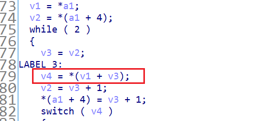

断断续续磨了两个礼拜，总算是差不多了🌊
什么是虚拟机
这个虚拟机当然和 VMware 和 VirtualBox 不一样，逆向中的虚拟机是一种保护代码的手段，让拖进 ida 之后的东西不那么好识别，重要代码用一定方式被拆分放入 switch 选择结构中，就好像被加了一层壳一样。
壳的本质
由于接触的 vm逆向也不多，目前为止碰到的都是将 cpu 所要执行的命令放置在 switch 语句中，通过选择语句来告诉决定接下来所要执行的指令，其实可以理解为代码块就是一个简易版 cpu，opcode 就是操作码，switch 中的语句就是简易cpu 所要执行的操作。
也就是说程序所要执行的有意义的代码没有直接显露出来，我们需要通过分析将拆分了的代码重新拼接起来具有可读性才能知道程序到底执行了什么。
这么说来还是非常非常的抽象，结合下面的这张图来具体分析分析
大致流程如下：
- 主程序运行指令设置进入 vm 函数前的准备工作，例如：虚拟寄存器的值、获取 opcode 等
- 根据虚拟寄存器的值获取当前所用的 opcode
- 根据 opcode 的值获得 switch 结构的选择结果并运行
- 调整虚拟寄存器的值，改变所指向的 opcode
- 循环上述过程直至结束
主程序中包含了虚拟寄存器的调整指令、opcode读取指令、switch 选择语句以及选择结果也就是真正有意义的代码执行，东西比较多所以就导致了不好判断程序的主要操作，也就起到了保护作用。
说到底，关键就是 switch 选择语句的选择结果，主程序走了 switch 分支中的哪一块就相当于执行了该分支里的指令，通过一次次的循环依次拼接所执行的指令就能够还原出程序的本质，套在程序外面的那一层壳也被我们起开了。
分支的走向
当前 opcode 所对应的值决定了 switch 结构到底走向哪一条分支，而当前 opcode 的值去取决于虚拟寄存器所指向的位置(也就是虚拟寄存器的值)，虚拟寄存器的值又被主程序更改决定。
简单的 VM 小试
主程序非常简单，也很清晰，很明显 vm_operad( ) 就是关键的 vm函数，前面对内存中的内容进行了拷贝并且作为参数传入了 vm函数，可以推测是 opcode 或者是 虚拟寄存器这些相关内容
进入 vm函数之后，观察 cfg 样子，很明显的 switch 选择结构
VM函数分析
个人认为 vm 函数分析的入口点在于识别出 opcode 以及虚拟寄存器
当前 opcode 的值影响主程序的分支走向，因此 switch 选择的判断可以帮助我们快速确定 opcode
上图中的 switch ( a1[v9] ) 就告诉我们 a1[v9]=当前 opcode 的值。再观察下面的 switch 语句，每一个分支中都对 v9 进行了改变，而 v9 又改变了 a1[v9] 的值，因此可以推测 v9 就是虚拟寄存器，也就是起到和 eip 相同的作用，下一个回合所读取的 opcode 的值正是 v9 所指向的位置。
而 a1 也就是在 main 函数中对内存内容进行拷贝的 v4 就是循环 switch 结构所要用到的所有 opcode
vm 函数的结束判断条件也是 opcode 的总个数
现在我们已经知道了所有的 opcode、虚拟寄存器对应的变量和其初始值、vm函数中 switch 结构的各个分支、虚拟寄存器值的改变方式，这些就已经足够我们还原出程序原来的模样。
还原样例
举个程序刚开始的例子，刚开始时 v9=0 a1[v9]=0Ah，走 case10 这个分支，执行了读取字符串并储存的一个操作
接着 ++v9 进行下一次循环，此时 a1[v9]=4，走 case4 这个分支
在 case4 这个分支中，将字符串中的一个字符和下一个 opcode 的值进行了一个异或，这个也说明了一件事：并不是所有的 opcode 都被用来决定程序所走的分支走向，部分 opcode 会在 switch 分支中被使用。由于这个分支中也有用到 opcode 再加上前面决定分支走向的一个 opcode，所以这次对于 v9 进行加 2 的操作，接着就是又开始新一轮的循环。
这么分析下来对于 vm 已经有了一个大概的认识，也可以知道，其实对程序真正有意义的指令都在 case 和 break 之间，对于这题而言 opcode 的数量不算多，但一个个循环分析也确实很耗耐心和时间，我们可以利用 虚拟寄存器、opcode、switch 分支走向之间的关系编写程序，将每个循环所走的分支语句提取出来，得到程序本来的样子。
处理 opcode
将所有的 opcode dump 下来，依靠关系将每一次所走的分支的语句显示出来
1 |
|
得到结果
1 | read(Str) |
通过处理 opcode，将每一次分支执行的内容整理出来逻辑就很清晰了，对输入的15个字符依次进行2次加减异或中的某一个操作，将操作后的字符串放置到距离原始字符串 100byte 的位置，最后和目标数值进行比较，要得到原始值操作反一下就可以了。
复杂的 VM
来自 2021 年 L3HCTF 的一道题目，double-joy（挂一下Q神解析
前置
因为 main 函数中包含了很多杂七杂八的东西，导致刚开始接触到这一题的时候，找 vm 函数都找了好久（x，我找 vm 函数的方式是依靠 cfg 大致形态。这是由于 switch 选择结构，所以就导致 vm 函数的 cfg 非常的有特点。
在 main 函数中，可以明确的是对输入字符串的读取
通过动调可以发现该循环用于放置所输入的字符串，一般而言这都是程序关键函数开始前的主要工作，所以推测 vm 函数应该是在这些操作后面，紧接着就进入了 sub_1D90 函数，
进入该函数，观察其 cfg，很明显的 vm 函数特征
但是 switch 的结构依旧没有出来，f5 反编译也是失效，这是因为题目中加了一个 3Eh 常数干扰，导致 ida 无法正确识别
将其 nop 掉，switch 结构就出来了
opcode 以及虚拟寄存器的识别
还是最先关注 switch(v4) 这个语句，v4 就是当前 opcode 的值，然后再去观察是什么改变导致了 v4 的改变

决定 v4 的值总共有2个因素 v1 和 v3，再结合下面 switch 语句的各个分支中的情况，v1 基本上是没有进行值的改变的，而 v3 的值在每一次循环的和 switch 选择语句之间都会进行修改
所以基本上就可以判断 v1 为 opcode 的基址，v3 则为所取 opcode 的偏移量，也就是虚拟寄存器中的 eip （其实 v3 是通过 v2 来赋值，v2 又来自于传入函数参数的结构体中的变量
对于结构体的分析可以通过对 a1 的偏移量结合动调分析出来，在 switch 语句中对 a1 地址的使用有下面的 4 种情况
结合每个变量的大小以及在结构体中的偏移量，可以大致知晓结构体中各个变量的分布关系，结合各个变量的使用关系，可以判断出变量的大致作用，下图中就是一个基址加相对偏移地址寻址的操作
结合动调，可以分析出结构体中各个变量的意义，得到结构体如下
再来看每个 switch 分支就更加清晰明了了
VM 函数分析
和上面简单的 vm 相比，上题中的每个 case 分支的作用都是很明了了，但是这题的18个 opcode 对应的操作就不是那么明显了
VM 其实做的是一个 opcode 模拟 shellcode 的运行过程，opcode 进入VM译码执行对应的汇编操作，如果能把 shellcode dump 出来，通过静态分析工具建数据流和控制流，甚至生成伪代码，那相当于剥离 VM 了，程序的分析难度也大大降低了。而实现这个过程，需要手动的分析出 VM 里每条 opcode 对应的汇编，并 dump 出 opcode 将所有 opcode 译码成汇编输出并编译。
熟悉 python 虚拟机的师傅对于这 18 个 opcode 应该挺明了的，虚拟机的操作和Python虚拟机很像，都是基于栈从栈顶做操作的，没有通用寄存器。
说白了其实就是每一个 case 分支都对应着一段汇编，如果我们不对分支内容进行汇编转换那就无法使用静态分析工具对其进行分析，即使按照顺序将次执行的分支内容输出来，那也看不懂（楽
接下来的重点就是写出 18 个 opcode 对应的汇编
1 | ip = 0 |
可以观察到分支中涉及到跳转，其实这个跳转改变的是虚拟寄存器 eip 的值，也就是 opcode 的相对偏移量，q师傅对每条 opcode 都插入一个label，将跳转的目的地址直接换成 label，这样就免去了将 opcode 的跳转转换成汇编跳转的步骤，非常方便。
可以发现 case 分支中包含了 retn，那就意味着如果不结合之前的汇编或者动调，我们是没有办法判断主程序到底跳转到哪里的，说白了，retn 语句被执行后是否还在继续执行 VM 函数都不好说（好吧，其实这题可以，因为 VM 函数就只有这一个 retn 出口。
事实证明 retn 之后，我们跳出了 VM 函数，回到了 VM 函数上方，这也是这道题目难的地方：进出了 VM 函数很多次，并且应该只有动调才能发现传入 VM 函数的参数也就是 VM 结构体不是一直都不变的。VM 结构体的 opcode 地址，虚拟寄存器 eip 的值都会改变，这也就以为着 shellcode 不止一段，并且执行 shellcode 的入口还会不一样
将两段 opcode 全部都 dump 出来，跑一下上面转化汇编的脚本就可以输出 asm 汇编文件，利用 nasm 编译成二进制文件
- nasm shellcode.asm
将得到的二进制文件拖入 ida，p识别成函数，f5进行反汇编
-
shellcode1
-
shellcode2
第一段 shellcode 是一个 xtea 加密，第二段 shellcode 是一个 tea 加密，q师傅还将栈上的各个位置含义修复了出来，更加清晰明了。
由于 VM 走了很多次，且入口还会不同，在进入 VM 前下一个条件断点，将进入 VM 的相关信息都打印出来
1 | stack_base = get_qword(cpu.rdi+8) |
可以进出 VM 函数总共 202 次，发现两段 opcode 是交替运行的，除了第一次和第二次 eip 的值为0，之后对于两段 opcode 的入口都是确定的。分析可以知道前面两次入口为0时做的是 XTEA 和 TEA 加密的初始化操作：key、sum、delta 的设置，一轮异或操作，for 循环内一次加密操作。之后由于 eip 的值的改变导致 opcode 入口改变，每次进入 VM 函数就只跑了 for 循环，而且每次只跑一轮（因为被 return 所控制了，通过外面参数的控制再跑。一共输入了40个字符，加密一整轮使用 2 个 DWORD 也就是 8 个字符，总共有 5 组，每组交替跑 20 轮 XTEA 和 20 轮 TEA，加上前面 2 次初始化正好是 202 次

上图中前面红框里的内容是进入vm函数时所要加密的8个字节，后面的是上一轮加密时 round（就是a1[20] 的值
最后两次进入 VM 函数没有进行加密操作，因为下图中 for 循环中的条件不再满足了

exp
1 |
|
小结
花了好一段时间，终于对 VM 逆向这一块进行了点了解，VM 逆向的关键就是 opcode ，虚拟寄存器，switch 分支的意义。并不是所有的 vm 逆向都是这种需要 dump 出 opcode 然后汇总分支执行的内容得到一段具有可读性的内容，形式上可以改变，但是本质上都是相同的。
收获
- 更加熟悉了 ida 的一些操作：结构体的构建和使用，下条件断点
- 动调和静态分析相互结合的重要性
一步步走下去的感觉真的很踏实（一下子想不起来还有啥收获了，倒时候再补。
本文作者：GhDemi
本文链接： https://ghdemi.github.io/2022/10/26/VM%E8%99%9A%E6%8B%9F%E6%9C%BA%E9%80%86%E5%90%91/
文章默认使用 CC BY-NC-SA 4.0 协议进行许可，使用时请注意遵守协议。